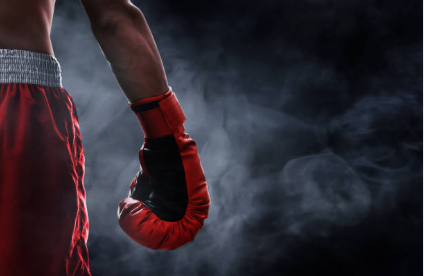
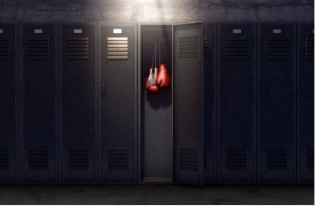

La boxe est un sport de combat pratiqué depuis le xviiie siècle à un contre un, qui recourt à des frappes de percussion à l'aide de gants matelassés. Mais les premières traces d'existence d'une forme primitive de boxe remontent à l'époque antique, lorsque les humains se mirent à user du poing comme arme naturelle : c'est le pancrace et le pugilat. Des recherches archéologiques sur des textes anciens (dont ceux de Gilgamesh) ont permis d'affirmer que la boxe existait déjà au IIème millénaire avant notre ère, en Mésopotamie (actuelle Irak), en Afrique du Nord - notamment en Égypte antique - et en Grèce. Les documents et pièces archéologiques révèlent en effet que des combats à mains nues étaient organisés en Assyrie, à Babylone et chez les Hittites en Asie Mineure. Les historiens et chercheurs ont pu déterminer par ailleurs, que la première utilisation de gants de boxe remonterait à deux époques de l'Antiquité : la civilisation minoenne (Crète et Minos, en Grèce antique), soit vers 1500-900 avant notre ère, et les Géants de Mont-Prama (statues en grès découvertes dans l'ouest de la Sardaigne en 1974). Ces statues nuraghes auraient été taillées au cours du 10ème siècle avant notre ère : parmi plus de 5 000 fragments reconstitués pendant de longues années, on trouve des statues de pugilistes, de guerriers et d'archers. Ailleurs dans le bassin méditerranéen, furent découvertes des œuvres antiques remontant à 2000 av. J-C, et représentant des pugilistes munis de gants de boxe, la tête recouverte de casques de protection. On sait par ailleurs que sur les territoires de l'actuelle Éthiopie, en Nubie, les hommes menaient des combats de boxe au Ier millénaire avant J-C. Alors envahie par les Égyptiens au 5ème siècle av. J-C, les rives du Nil deviennent un lieu où les soldats s'affrontent au corps à corps pour divertir rois et pharaons. Ce sport de combat désigne généralement la boxe anglaise. Par extension, de nombreuses disciplines ont pris le nom de boxe : les « boxes sportives » du xixe siècle et xxe siècle comme les boxes pieds-poings (BPP) réglementées en Europe, la boxe américaine, le kick-boxing, la savate boxe française, le chausson ou le panache (cousins de la boxe française), les boxes asiatiques dites « martiales » comme la boxe chinoise, le kung-fu-wushu, la boxe khmère (Pradal Serey), la boxe birmane (bama lethwei) et la boxe thaïlandaise (muay-thaï) entre autres.
Rédigées en 1865, les premières règles du Marquis de Queensberry mirent l'accent sur l'agilité des combattants, plutôt que sur leur force. Cette charte interdisait un ensemble de choses qui étaient d'usage depuis l'Antiquité : le combat à mains nues, le corps à corps, l'étouffement, les coups lorsque l'adversaire est impuissant, le combat "au finish" (fin du combat seulement lors du knock out). C'est à partir de ce moment-là que fut codifié le déroulement du match en trois rounds de trois minutes. En boxe professionnelle, ces rounds sont entrecoupés d'une pause d'une minute et l'on peut en compter jusqu'à douze par combat. Le combattant qui ne peut se relever après un décompte de dix secondes perd le match. Le ring doit mesurer 7,32 mètres, sur un terrain ou une estrade. Il est interdit de lutter au sol, de se projeter ou de se tirer au sol. En boxe anglaise, l’objectif est de mettre KO (Knock-Out) son adversaire, c’est-à-dire le mettre hors d’état de combattre pendant plus de 10 secondes. Le combat est divisé en plusieurs rounds de 3 minutes et le nombre de rounds varient selon le niveau et le type de combat. Si à la fin du combat, les deux boxeurs sont toujours debout, celui qui aura inscrit le plus de points est déclaré vainqueur. Ce sont des juges qui attribuent les points. Un arbitre est présent sur le ring, il peut signifier un KO technique lorsqu’on boxeur ne lui semble plus en état de combattre, que ce soit à la suite d’une blessure ou d’un état de faiblesse trop grand. Il va aussi contrôler qu’il n’y ait pas de coups interdits, comme par exemple un coup de tête ou un coup bas. L’arbitre sépare aussi les boxeurs lorsqu’ils s’attrapent que ce soit pour perdre du temps ou éviter des coups.
La tenue du boxeur est composée d’un short, de chaussures de boxe, de gants, d’un protège dents et d’une coquille. Le port du casque va dépendre du niveau, de l’âge et de la compétition (combat olympique, championnat du monde, championnat de France…). Les boxeurs qui s’affrontent sont du même sexe et de la même catégorie de poids. Il existe au total 17 catégories différente. Un pesé est effectué la veille de chaque combat pour s’assurer que du poids de chaque boxeur. Il n’y a finalement qu’en poids lourd qu’onpuisse trouver une différence de poids parfois assez importante.
La boxe anglaise se pratique sur un ring. Il doit faire entre 4,90 et 7,30 mètres de côté. Il est entouré de cordes élastiques qui empêchent les boxeurs de sortir ou de tomber du ring. Chaque coin est rembourré de la base au sommet par des cousins de protection. La première corde se trouve à 40 cm du sol, la seconde à 80 cm et la dernière à 130 cm. Le ring peut être posé directement au sol, mais il est généralement surélevé sur une estrade pour permettre au public de mieux voir le combat.
